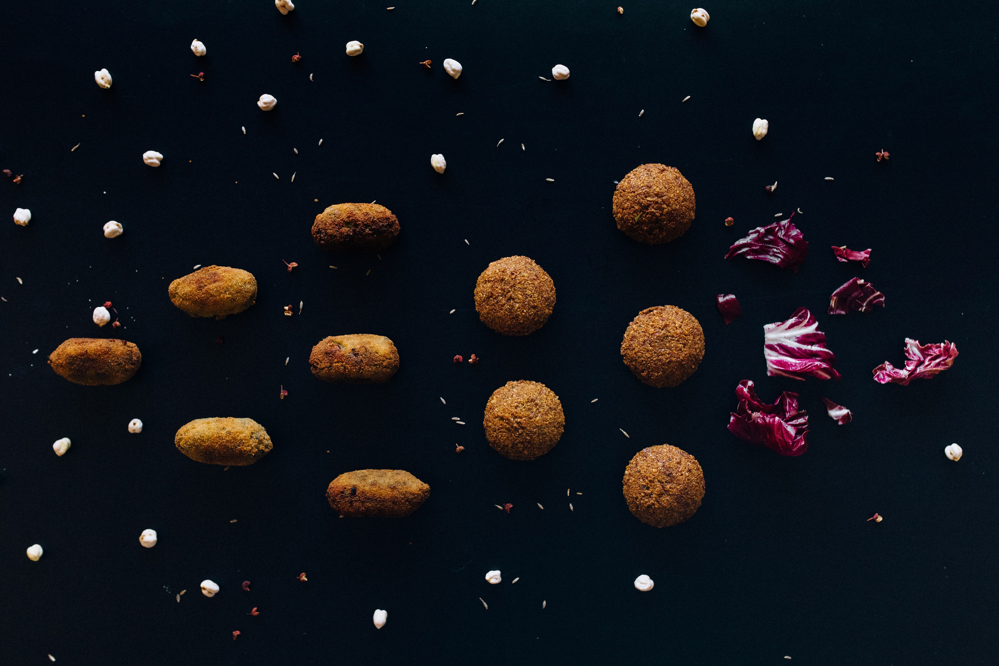

الطعمية

وصف قصير
Taamya is an Egptian food that's usually served on breakfast is made of beans unlike falafel.Taamya is vegetrian
Ingradients
<1i>2 cups dried split fava beans
- 1 red onion, quartered
- ½ cup fresh cilantro
- ½ cup fresh dill
- 3 cloves garlic
- 1 ½ teaspoons ground coriander
- 1 ½ teaspoons salt
- 1 teaspoon ground cumin
- 1 cup sesame seeds (Optional)
- vegetable oil for frying
Steps
- Place fava beans in large bowl and cover with several inches of water. Let soak, 8 hours to overnight. Drain.
- Combine soaked fava beans, red onion, parsley, cilantro, dill, garlic, coriander, salt, and cumin in a food processor; process to a dough-like consistency.
- Heat a skillet over medium heat. Add sesame seeds; cook, stirring occasionally, until toasted, about 5 minutes. Transfer to a large plate.
- Shape fava bean mixture into balls. Roll in sesame seeds to coat.
- Fill a large saucepan 1/4 full with oil; heat over medium heat. Fry fava bean balls in batches until golden brown, 3 to 5 minutes. Drain on paper towels.
See othere recipes?
Recipe Source